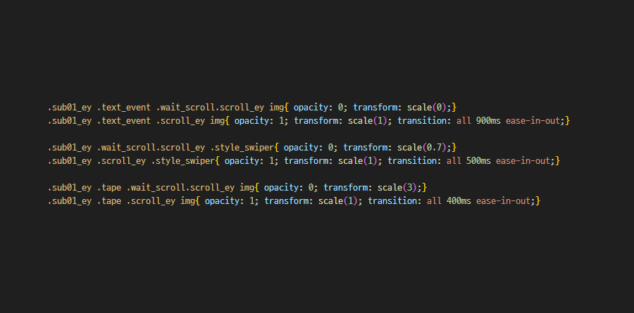
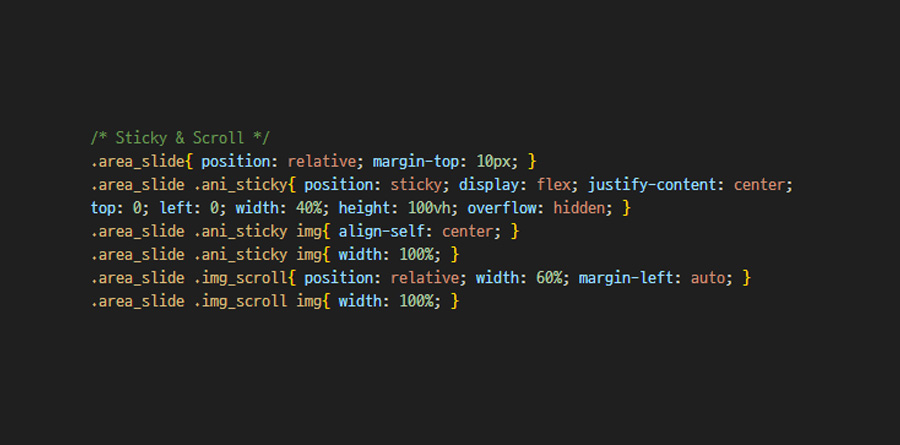
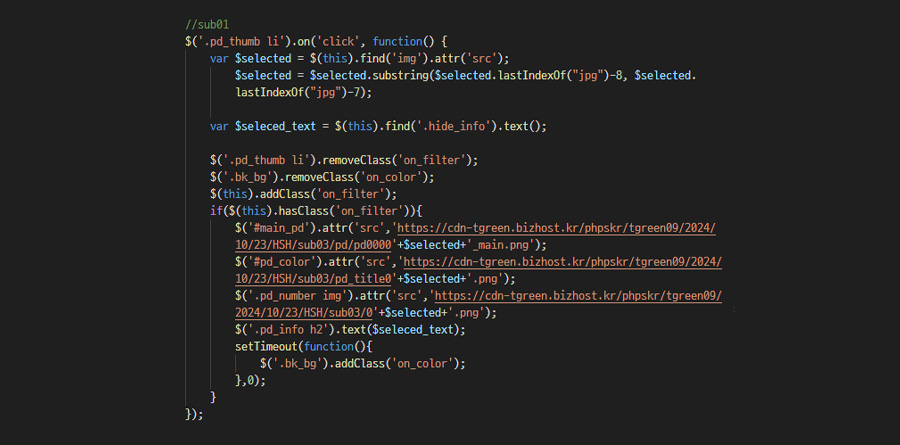
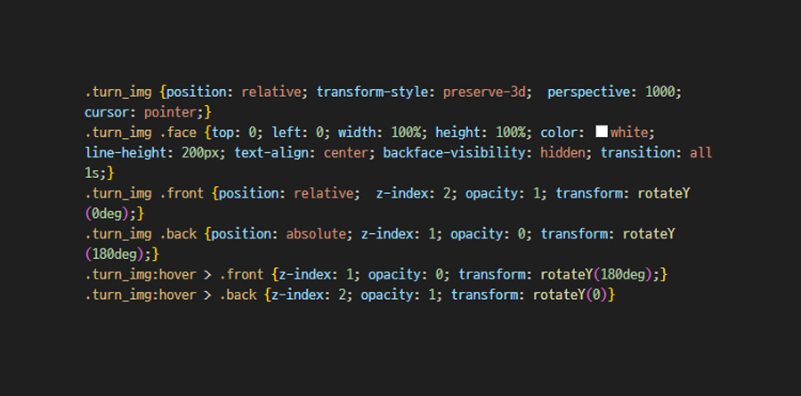

Puffer JacketEarly-Bird
패딩 얼리버드 퍼블리싱 프로젝트
기여도 : 2인 팀 프로젝트 (퍼블리싱 95%)
제작 기간 : 3일 (퍼블리싱 3일)
툴 : Figma, Photoshop, Visual Studio Code

Project Vision
파트장님과 협업한 프로젝트인 만큼, 기획된 디자인의 의도를 최대한 살릴 수 있는 방향을 고민하며 작업했습니다. 스크롤에 반응하는 다양한 이벤트를 적용하되, 전체적인 흐름은 유지하여 화려하면서도 일관된 구성을 만들고자 했습니다. 이를 통해 사용자가 콘텐츠를 더욱 직관적으로 이해할 수 있도록 설계했습니다.
- 01 스크롤에 반응하는 다양한 인터랙션 효과로 역동적인 경험 제공
- 02 불필요한 스크롤을 줄이고 가독성을 높인 효율적인 레이아웃 구성
- 03 화려한 이미지와 컨셉을 강조하여 강렬한 비주얼 완성
Publishing
스크롤 반응 이벤트
스티키를 활요한 레이아웃
이미지 체인지 스크립트
3D 플립 애니메이션

show_trigger 클래스를 가진 요소들의 위치를 계산하는 스크립트를 작성하여 하나의 스크립트로 다양한 스크롤 이벤트를 활용하여 간단하지만 동적인 이벤트들로 화려하게 연출했습니다.

position: sticky를 활용하여 레이아웃을 효율적으로 구분하여, 왼쪽 영역은 화면에 고정되도록 설정하고, 오른쪽 영역은 자유롭게 스크롤되도록 연출하였습니다. 이를 통해 사용자는 주요 콘텐츠를 지속적으로 확인하면서도 자연스럽게 흐름을 따라갈 수 있도록 UX를 개선하였습니다

제품 썸네일을 클릭 시 해당 제품의 정보를 메인 콘텐츠로 변경하는 기능을 수행하여 직관적인 Ui를 제공하였습니다.
